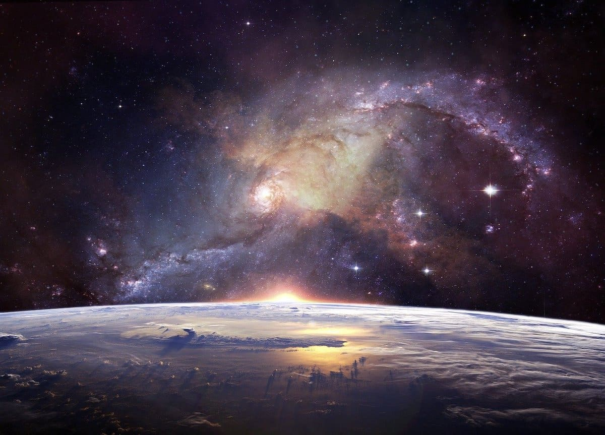

ExoExploration by Los Desubicaos
Este juego ha sido creado con mucho cariño por un grupo de estudiantes con el objetivo de la explicar que son los exoplanetas y a la misma vez que sea una experiencia agradable para cualquiera. Un juego divertido con puzzles inspirado en el descubrimiento de planetas y en un hombre que ha perdido a su hija e intenta encontrarla.
